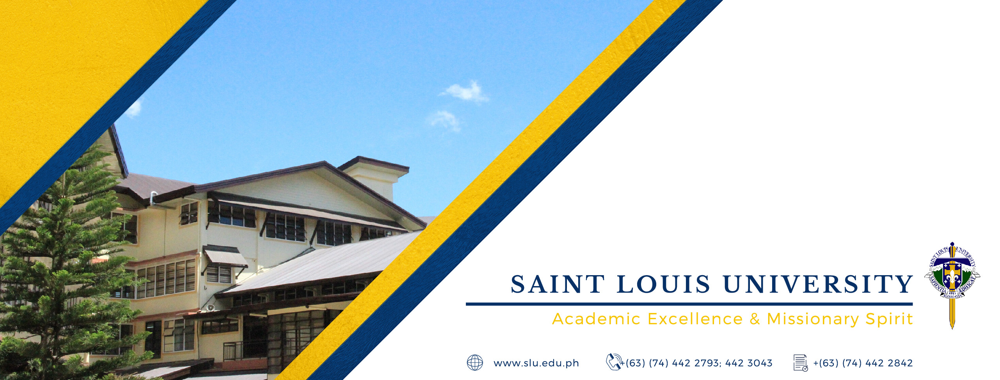
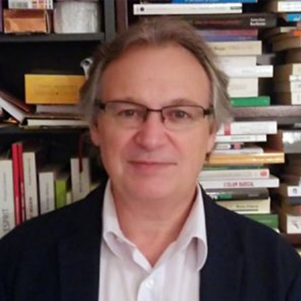
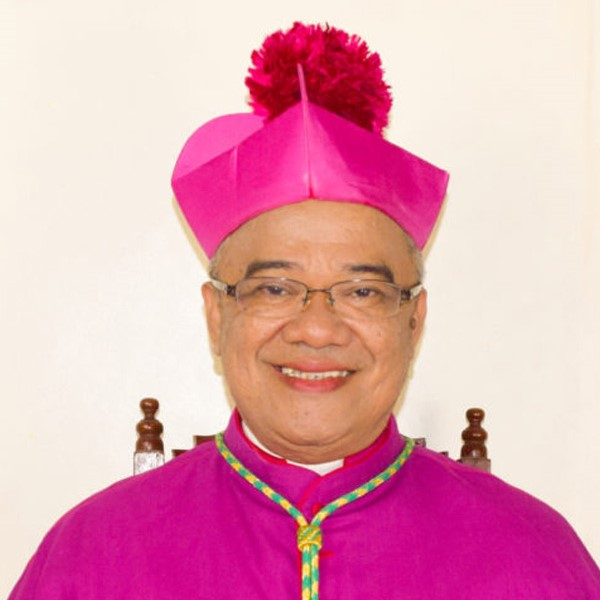
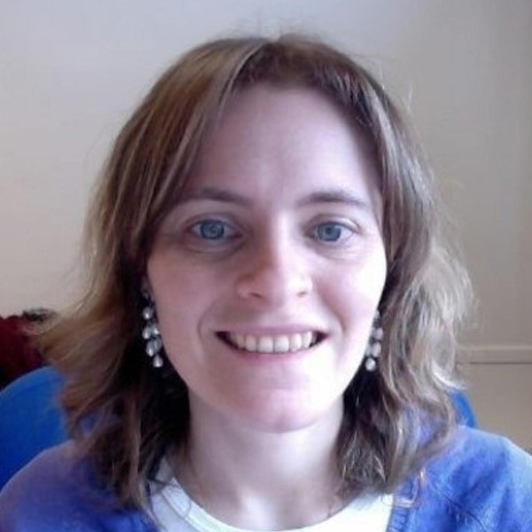
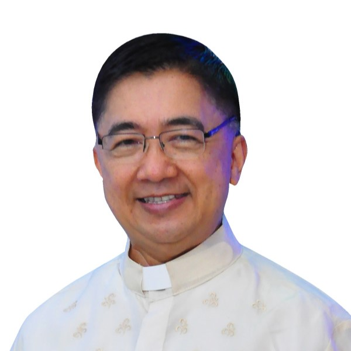
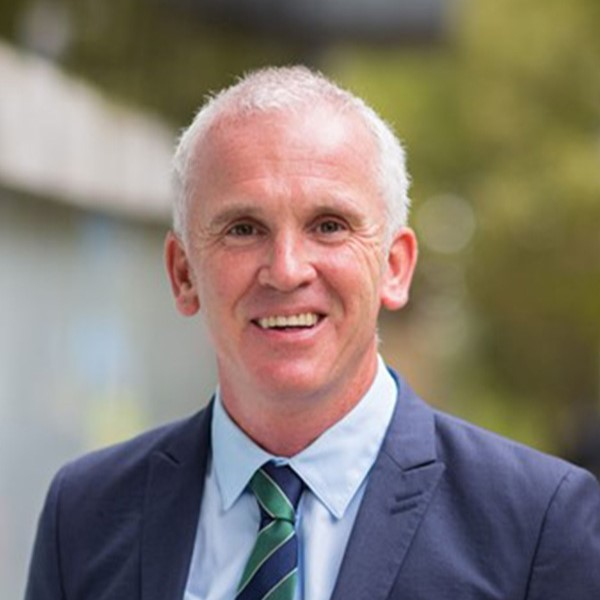
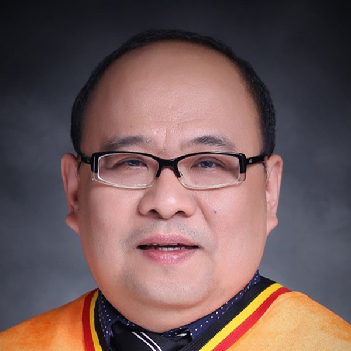
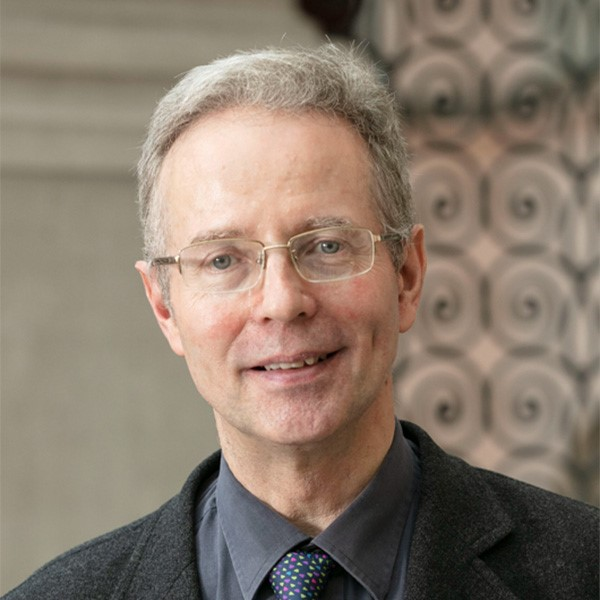
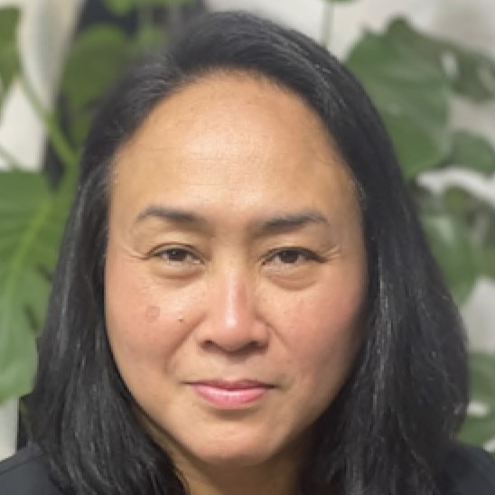

About ASEACCU
The Association of South East and East Asian Catholic Colleges and Universities (ASEACCU) is an organizationthat unites catholic educational institutions from South East Asian Countries. The goal of ASEACCU is to encourge catholic educational institutions to have strong collaboration and cooperation in promoting catholic educational ideas, allowing the students to develop character, religious involvement and personal growth. ASEACCU also strongly advocates the promotion of catholic higher education and the support of local Churches, contributing to organizational mission towards education and service .
Event Details

Venue: Saint Louis University
Saint Louis University is known as one of the prestigious schools located in Baguio City, Philippines. Saint Louis University is recognized for its commitment to academic excellence, offering quality and outstanding education. Saint Louis University is founded by a CICM (Congregatio Immaculati Cordis Mariae) missionary, Rev Fr Séraphin Devesse, CICM, in 1911. Saint Louis University offers an a wide array of academic areas and fields in arts, business, engineering, education, infromation technology, medicine, law, and many more. Baguio City's Saint Louis University offers a welcoming environment for students, enabling them to learn and develop their background and values values in a breathtaking and natural setting.
"We envision Saint Louis University as an excellent missionary and transformative educational
institution zealous in
developing locally responsive, globally competitive, and empowered human resources who are creative,
competent,
socially involved, and imbued with Christian spirit."
-The SLU Vision-Mission Statement
Conference Date & Info
The ASEACCU Conference is a 5 day event starting from
August 21 to August 25 of 2023. Saint Louis University is located at
A.Bonifacio Street, Baguio City, Philippines. Registrations are now closed
since the annual conference has already concluded.
ASEACCU Speakers
Keynote Speaker

François Mabille
Secretary General of IFCU
Guest Speakers

Most Rev. Gerardo Alminaza
BISHOP OF SAN CARLOS DIOCESE OF SAN CARLOS CITY NEGROS OCCIDENTAL, PHILIPPINES

Montserrat Alom
DIRECTOR OF THE INTERNATIONAL CENTRE FOR RESEARCH AND DECISION SUPPORT (CIRAD), IFCU
Stephenie O. Busbus
CHAIR, INSTITUTIONAL REPUTATION AND EFFECTIVENESS COMMITTEE SAINT LOUIS UNIVERSITY

Rev. Fr. Aloysius Ma. A. Maranan
RECTOR-PRESIDENT, SAN BEDA UNIVERSITY

Dermot Nestor
EXECUTIVE DEAN FACULTY OF THEOLOGY AND PHILOSOPHY, AUSTRALIAN CATHOLIC UNIVERSITY

Nestor R. Ong
DEPUTY DIRECTOR, OFFICE OF QS/THE RANKINGS, UNIVERSITY OF SANTO TOMAS
Quintin Pastrana
PRESIDENT, WENERGY POWER PILIPINAS

Stephan Rothlin
DIRECTOR, MACAU RICCI INSTITUTE

Karen Tagulao
SENIOR LECTURER, UNIVERSITY OF SAINT JOSEPH MACAO
View and download the complete schedule of ASEACCU 2023 for Faculty and Students